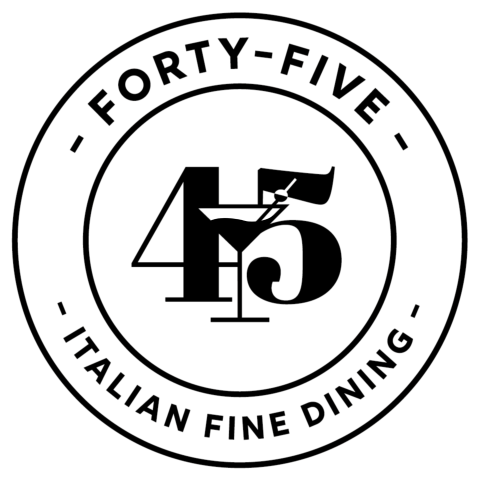
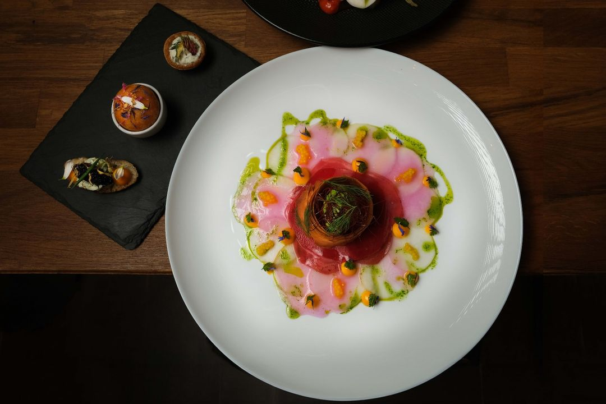
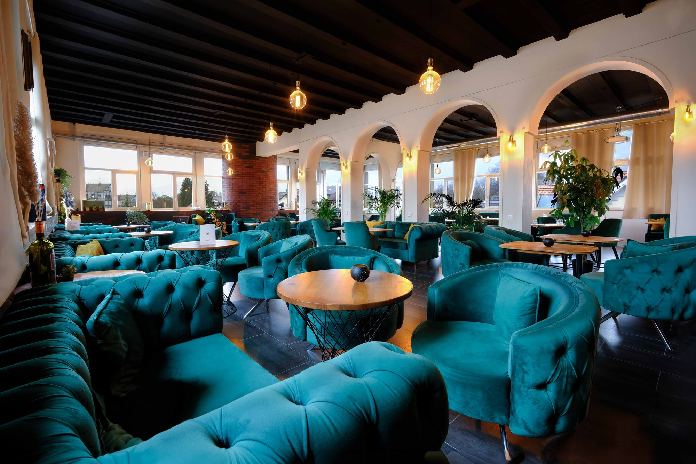
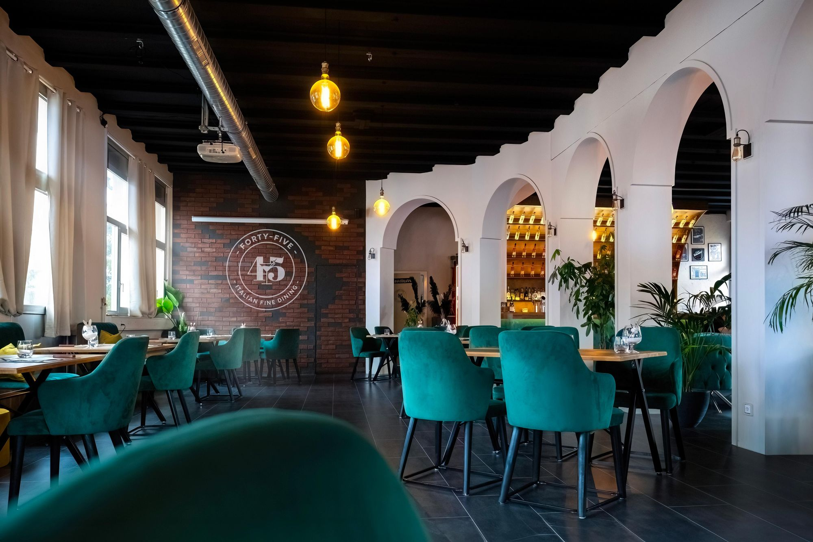
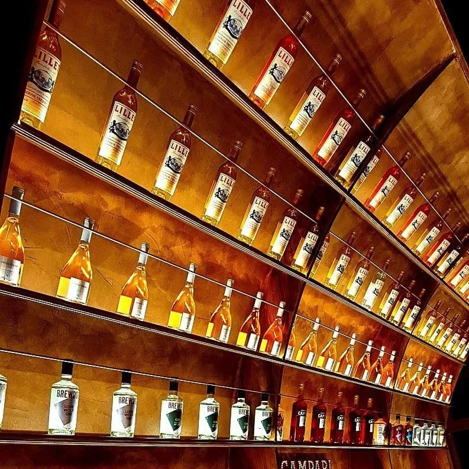
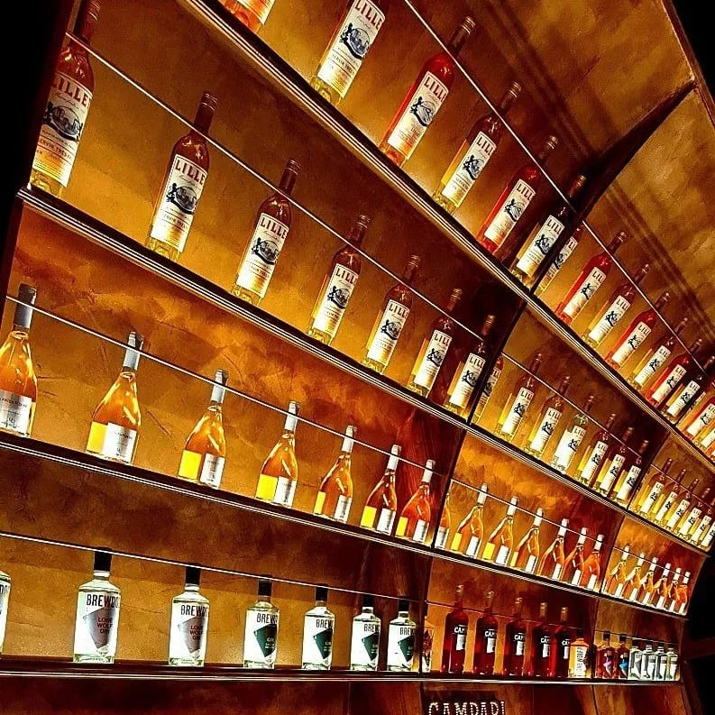
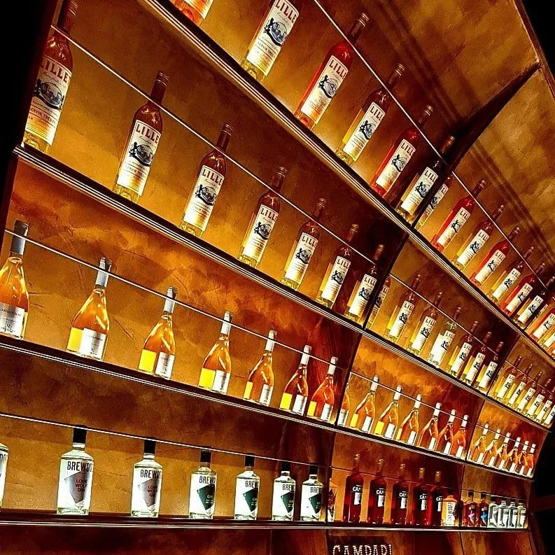
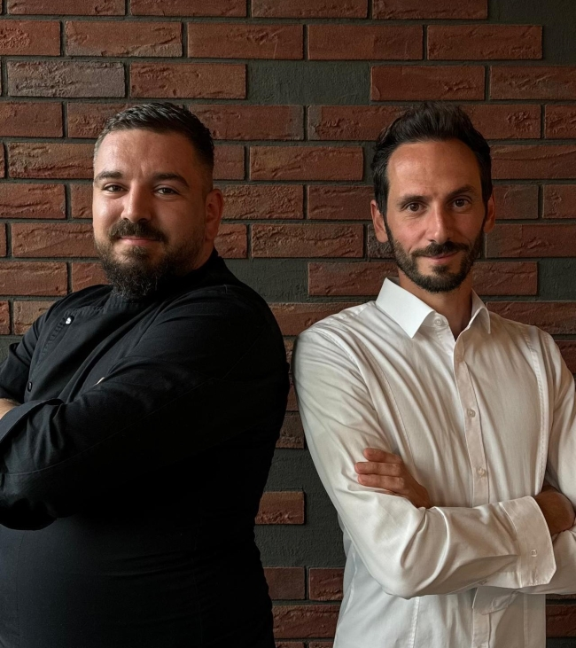

DIE WELT GEHORT DEM, DER SIE GENIESST
– GRAF GIACOMO LEOPARDI -
INFO:
Aromen des Winters
20. & 21.12.24 Geschlossene Gesellschaft
Freie Platze ab dem 27.12.2024
- WEBSITE IN BEARBEITUNG -
WO NEUES ENTSTEHT
Fine Dining trafft auf
Industrial Chic
4500 Solothurn

Il Ristorante
Nico und Patrik laden Sie ein, bei uns eine kulinarische Reise zu erleben, die durch die Unmittelbarkeit der Handarbeit und den Luxus der Frische definiert wird. Entdecken Sie mit uns die unendlichen Möglichkeiten der Raffinesse und lassen Sie sich von der reinen Freude an exquisiter Kulinarik verführen. In unserem Ambiente verbinden sich Eleganz und Behaglichkeit zu einem Ort, der nicht nur den Gaumen, sondern auch die Seele berührt. Jedes Gericht erzählt eine Geschichte – geformt von den Händen unserer meisterhaften Köche, die nicht nur ihr Können, sondern auch ihr Herz in die Zubereitung jeder Speise legen
Il Bar - Lounge
Lassen Sie den Alltagsstress hinter sich und nehmen Sie Platz in unseren gemütlichen Samt - Sesseln oder Sofas von wo aus Sie eine wunderbare Sicht auf die einzigartige Kulisse der spektakulären Bar geniessen. In unserem erholsamen mediterranem Ambiente können Sie sich an klassischen oder personalisierten Drinks erfreuen. Überzeugen Sie sich selbst und lassen Sie sich von uns verwöhnen.


Herzlichen Dank Swiss Location Award 2023 & 2024 Bar & Genusslocation
Wir Bedanken uns Herzlichst für Euren Besuch und freuen uns auf jeden weiteren Gast der uns noch nicht in Solothurn Besucht hat. Kommen Sie vorbei und verbringen Sie schöne und erholsame Stunden bei einem aussergewöhnlichen Essen oder Drink.
Die Geschichte hinter dem FortyFive
Im Dezember 2021 wurde die ehemalige Trattoria al Solito Posto von uns übernommen. Wir hatten viele Visionen und Ideen im Kopf und mit einer grossen Portion Kreativität konnten wir diese Schritt für Schritt in der Renovation des FortyFive verwirklichen. Das neue Industrial Chic in Solothurn. Dabei wurden wir tatkräftig von Familie und Freunden unterstützt. Der komplette Umbau wurde mit vereinten Kräften und vielen Stunden Handarbeit über Monate umgesetzt. Darum sind wir besonders stolz auf das Ergebnis unseres Herzensprojekts.



 



Das FortyFive Team
Patrik Schmidt Chef de Cusine*
(Fur Finesse und Raffinesse)
Nicola "Nico" Maggi
(Gastgeber)
Wir freuen uns auf Ihren Besuch
Die Bar FortyFive befindet sich in Solothurn im Öufi Areal, an der Fabrikstrasse 4, ein Industrie Gebäude mit Charme. Du findest uns im 3. Stock. Wenn es mal schnell gehen muss kannst du auch den Lift nehmen.
Jobs
Wir suchen Dich!
50-80%
Servicefachfrau/Mann - Koch/Kochin mit Erfahrung in gehobener Gastronomie.
Bist du motiviert in einem neuen Restaurant - Bar mitzuarbeiten und es mitzupragen?